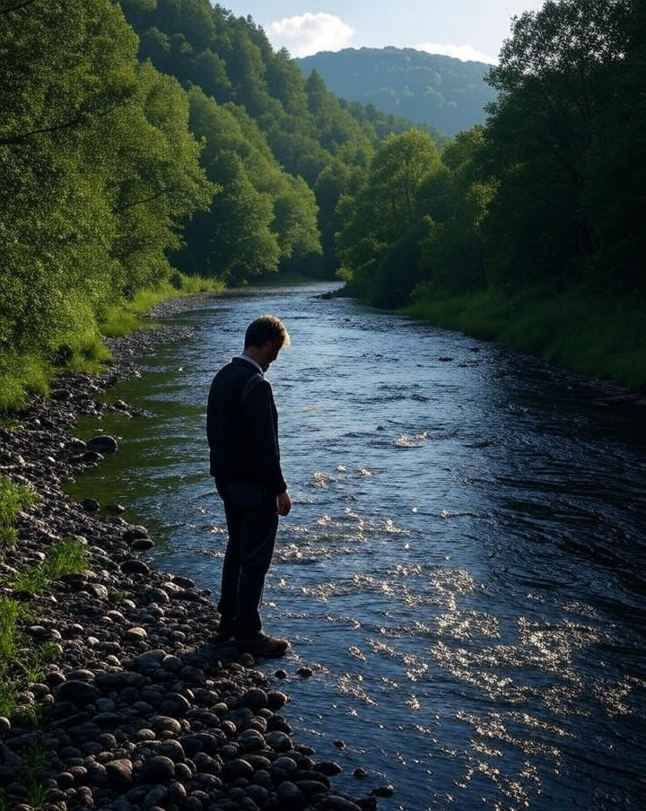

My First Post
IntroductionWelcome to my first blog post! This marks the beginning of my journey into sharing knowledge, experiences, and insights from the world of cybersecurity and technology.
As someone passionate about building secure systems and exploring the intersection of AI and security, I wanted to create a space where I can document my learning, share discoveries, and contribute to the security community.
What to Expect
In this blog, you'll find:
- Technical Deep Dives - Exploring security concepts and implementations
- Project Walkthroughs - Behind-the-scenes of my security tools and research
- Learning Resources - Guides and tutorials for security enthusiasts
- Industry Insights - Thoughts on cybersecurity trends and developments
My Approach
I believe in practical security - solutions that work in real-world scenarios. My focus is on building defensible systems rather than just theoretical concepts.
Whether you're a fellow security researcher, developer, or just curious about cybersecurity, I hope you'll find valuable content here.
This is just the beginning. There's much more to explore and share.
